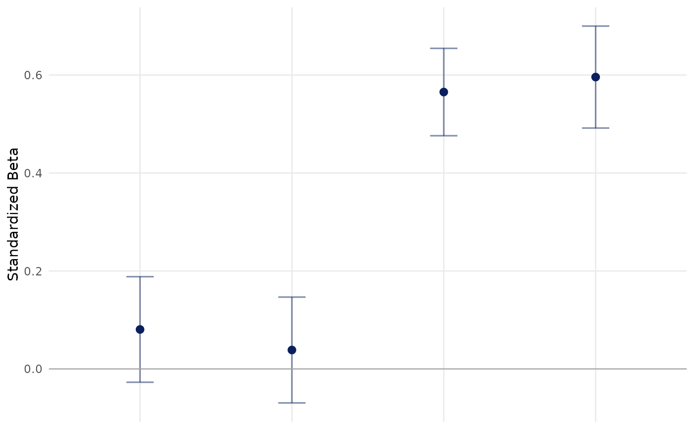
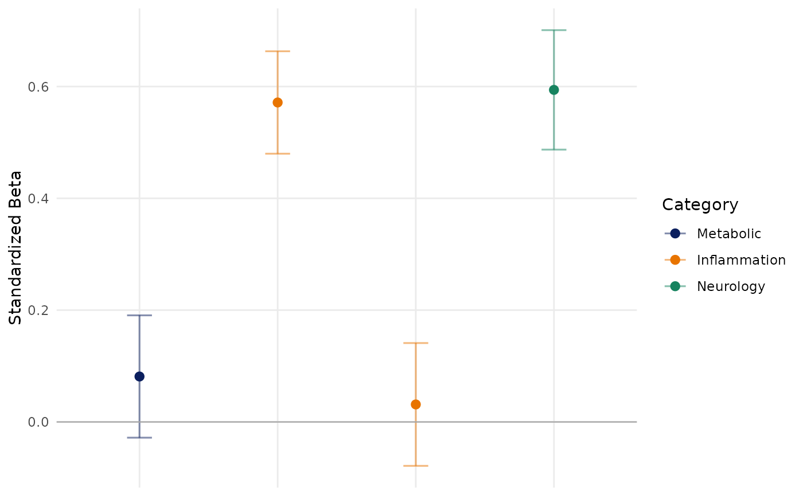

Plot standardized beta profiles across continuous predictors
Source:R/PlotBetaProfile.R
PlotBetaProfile.RdFits a separate linear model for every predictor and displays the resulting
standardized regression coefficients with 95% confidence intervals. This is
the continuous-outcome companion to PlotZScore(): use it to compare the
direction and magnitude of associations across a panel of predictors.
Usage
PlotBetaProfile(
data,
predictor_vars,
outcome_var,
covariates = NULL,
VariableCategories = NULL,
Sort = c("original", "pvalue", "fdr", "effect", "within_category_pvalue",
"within_category_effect"),
AdjustMethod = "fdr",
Alpha = 0.05,
Relabel = TRUE,
codebook = NULL,
RemoveXAxisLabels = TRUE,
InteractiveLabels = TRUE
)Arguments
- data
A data frame containing the outcome, predictors, and covariates.
- predictor_vars
Nonempty character vector of numeric predictor names.
- outcome_var
Character string naming a numeric continuous outcome.
- covariates
Optional character vector of covariate names. Covariates are included without automatic standardization.
- VariableCategories
Optional categories for the predictors. Supply a vector corresponding to
predictor_vars, a named vector keyed by predictor name, or a data frame withVariableandCategorycolumns.- Sort
Variable ordering. One of
"original","pvalue","fdr","effect","within_category_pvalue", or"within_category_effect".- AdjustMethod
Multiple-testing method passed to
stats::p.adjust().- Alpha
Numeric significance threshold recorded in the returned metadata. Significance does not control plot color.
- Relabel
Logical. If
TRUE, display labels are resolved from the supplied codebook, then variable label attributes, with variable names as the fallback.- codebook
Optional data frame containing
VariableandLabel.- RemoveXAxisLabels
Logical. If
TRUE, x-axis labels are hidden.- InteractiveLabels
Logical. If
TRUE, the point layer contains atextaesthetic forplotly::ggplotly(..., tooltip = "text").
Value
A named list with three elements:
PlotA ggplot object showing standardized betas and 95% CIs.
ResultsTableA tibble with one successfully analyzed predictor per row and columns
Variable,Label,Category,Beta,SE,CILow,CIHigh,PValue,FDR,N,R,AdjustedR, andTooltip.MetadataA named list describing the outcome, requested and analyzed predictors, covariates, adjustment method, alpha threshold, sorting mode, confidence level, and number of fitted models.
Details
Each model has the form scale(outcome) ~ scale(predictor) + covariates.
Covariates retain their original representation and are not standardized.
The plotted beta is therefore the standard-deviation change in the outcome
associated with a one-standard-deviation increase in the predictor,
conditional on the supplied covariates. Complete cases are selected
independently for every predictor model.
Examples
data(SampleData)
data(SampleVariableTypes)
Labelled <- RevalueData(SampleData, SampleVariableTypes)$RevaluedData
predictors <- c("Adiponectin", "C_Reactive_Protein", "Ferritin", "tau")
# Unadjusted
unadjusted <- PlotBetaProfile(
data = Labelled,
predictor_vars = predictors,
outcome_var = "AXL"
)
unadjusted$Plot

# Adjusted
adjusted <- PlotBetaProfile(
data = Labelled,
predictor_vars = predictors,
outcome_var = "AXL",
covariates = c("age", "sex")
)
adjusted$ResultsTable
#> # A tibble: 4 × 13
#> Variable Label Category Beta SE CILow CIHigh PValue FDR N
#> <chr> <chr> <chr> <dbl> <dbl> <dbl> <dbl> <dbl> <dbl> <int>
#> 1 Adiponect… Adip… NA 0.0813 0.0556 -0.0281 0.191 1.45e- 1 1.93e- 1 322
#> 2 C_Reactiv… C-re… NA 0.0313 0.0558 -0.0785 0.141 5.75e- 1 5.75e- 1 322
#> 3 Ferritin Ferr… NA 0.571 0.0466 0.480 0.663 1.31e-28 5.24e-28 322
#> 4 tau Tau … NA 0.594 0.0542 0.487 0.701 1.48e-22 2.95e-22 223
#> # ℹ 3 more variables: R <dbl>, AdjustedR <dbl>, Tooltip <chr>
# Categories and within-category sorting
categories <- c("Metabolic", "Inflammation", "Inflammation", "Neurology")
categorized <- PlotBetaProfile(
data = Labelled,
predictor_vars = predictors,
outcome_var = "AXL",
covariates = c("age", "sex"),
VariableCategories = categories,
Sort = "within_category_pvalue"
)
categorized$Plot
